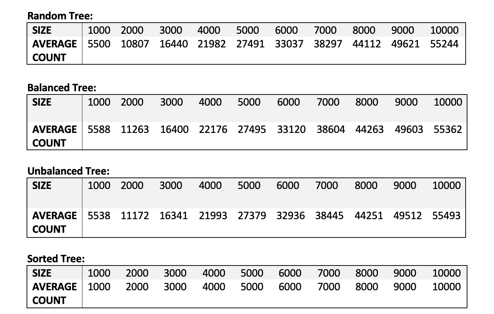

Empirical Analysis of a Binary Search Tree-based Movie Collection
Project Overview:
This project showcases a deep-dive analysis into the efficiency of a Binary Search Tree (BST)-based movie collection implementation. I designed an experiment to study the algorithmic efficiency of a specific method in the application, specifically the method calculating the total number of DVDs in the collection. The project incorporated elements of both software development and data analysis, resulting in a detailed report showcasing the algorithmic understanding and analytical capabilities.
Building the BST-based Movie Collection:
The first step in this project was the creation of a Binary Search Tree (BST) to represent a movie collection. Each node of the BST held a movie title and the number of available copies. The BST was constructed in a way to handle operations like adding movies, searching for a specific movie, and calculating the total number of DVDs in the collection.
Analyzing Traversal Algorithm Efficiency in Binary Search Trees
In this project, I explored the efficiency of the traversal algorithm used to calculate the total number of DVDs in a binary search tree (BST). I generated various BSTs (balanced, unbalanced, random, sorted) and measured the performance of the 'NoDVDs' method in different scenarios. The performance analysis was based on operation counts collected over multiple iterations, which allowed me to compute an average count for each tree type and size. This comprehensive study verified the theoretical time complexity of the 'NoDVDs' method and provided valuable insights into its behavior under different conditions. The analysis was visualised using graphs and data tables for a clear comparison.
Designing and Conducting the Experiment:
The core focus of the project was to analyse the NoDVDs method, which calculates the total number of DVDs in the collection. The experimental setup involved creating BSTs of varying sizes (1000 to 10000 nodes), and types (Random, Balanced, Unbalanced, Sorted). The NoDVDs method was called multiple times for each tree, and the number of operations (visiting a node) was recorded.

Empirical Data Analysis:
Upon collecting the data, the average operation count for each tree size and type was calculated. This data was then used to perform an empirical analysis. The key metrics used were the average operation count and the ratio between operation counts for different tree sizes. The analysis aimed to provide an empirical basis for confirming the theoretical time complexity of the NoDVDs method.
Validating Theoretical Assertions:
The theoretical time complexity for the NoDVDs method was found to be O(n), with n being the number of nodes in the BST. My empirical data analysis supported this theoretical assertion, showcasing a linear relationship between the tree size and the operation count. This provided a practical validation for the theoretical understanding of the algorithm's efficiency.
Visualisation and Interpretation:
The data from the empirical analysis was visualised using graphs, which were further used to interpret and confirm the empirical findings. The visual representation offered a clear picture of how the operation count scaled with the tree sise and allowed easy comparison between different tree types.
In conclusion, this project reflects a comprehensive understanding of binary search trees, algorithm analysis, and the importance of validating theoretical results with empirical data. It showcases the ability to implement complex data structures, design and conduct experiments, perform data analysis, and interpret results in a meaningful way.